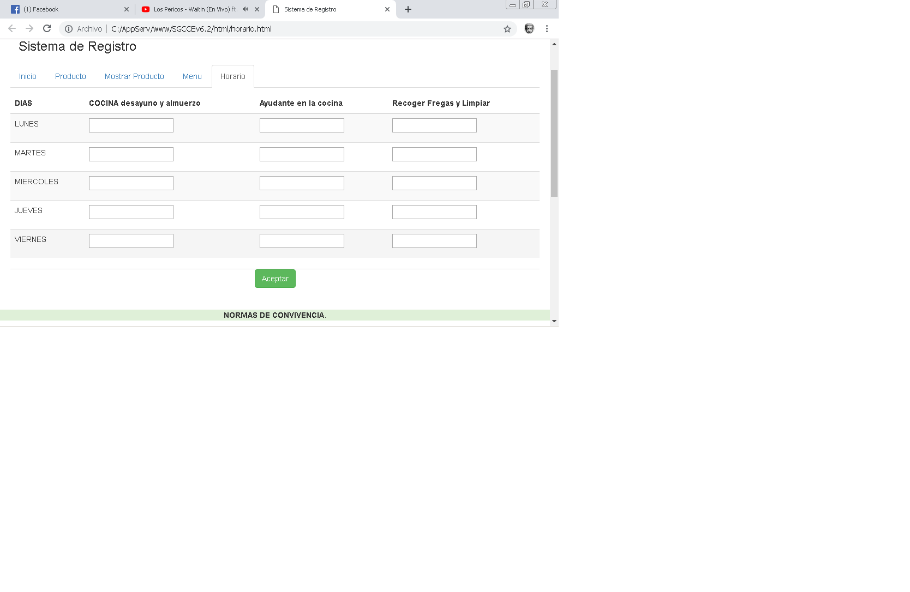
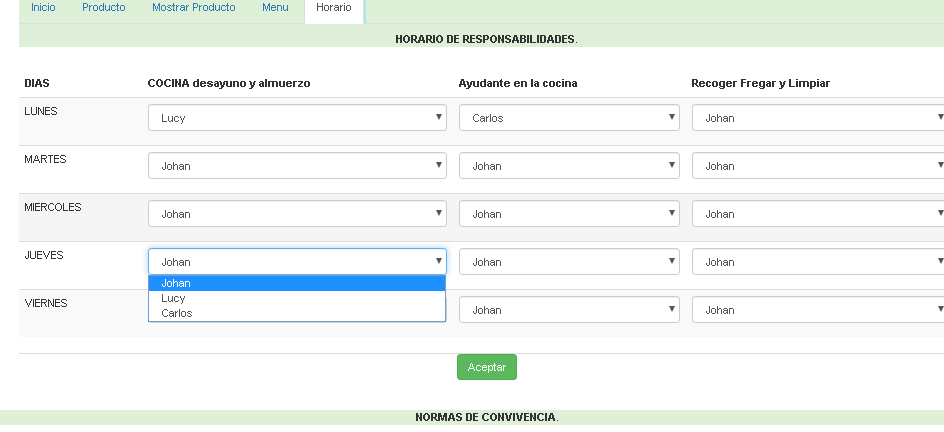

Johan cegarra
Estudiante de informatica para la gestion social
Es un proyecto en el que se quiere lograr emplear a través de la identificación de las necesidades a nivel tecnológico en el área del comedor escolar lograr mejorar su sistema de automatización estableciendo a través del diagnóstico y el diseño uno de manera digital que logre mejorar el método de registro .Elaborando un sistema que cumplirá en mejorar y facilitar el registro de productos tales como: Víveres, verduras y hortalizas, charcutería, así como a sus proveedores, es por eso que permitirá resolver en gran manera un problema de administración brindando resultados eficaces y en menor tiempo sobre los procesos y actividades cotidianas en esta área..
 